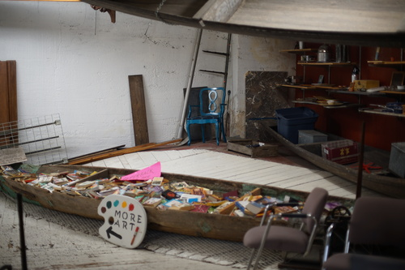

Kohi took us to downtown Tacoma to show us an antique store called Sanford & Son. She had already been there and written about it, but I was told not to read the post because of spoilers! I did as instructed and did not look!
Kohi wanted to bring the boys there because there was a really cool book area of the store. It was down the main stairs, through a long hallway, into a big room of big furniture, and then finally...
It was indeed a very cool book area! Unfortunately, every softcover book was $5 and every hardcover was $10. There were a lot of garbage books to sort through at prices maybe one or two were worth, if you could find them.
There were sinks in the library area behind the counter. I'm really curious what the original function of this building was.
There was a little camera shop called Golden Hour within the store. I've never been in a camera shop before! Most of wares ware vintage bodies and lenses. The owner's name is Garrett and he was able to identify my camera as Sony with the labels covered, though he did have to ask if it was full frame! He was very nice and was up for making deals. You'll have to check out his store if you're in the area.
I bought 52 and 55mm lens caps as well as matching Konica body/mount caps from him. I still need to buy a mount adaptor for my Konica lens, but this covers the missing caps for it. I think I need one more cap but I didn't write it down!
Golden Hour had a few lenses I was interested in, but I always find myself back with my 50mm f/1.4. It's hard to be convinced to pay actual prices when I just keep going back to my favorite. Did I ever tell you how much I love this lens?? I love it so much.
There were a few more shops inside, but a lot of them were closed! One store was celebrating gingham girl summer, but was taking a week vacation when I stopped in. Maybe next time!

I convinced Ryan to take me to a thrift store we haven't been to. The most exciting thing there were the signs saying "Don't steal from us! You are stealing from orphans! God is watching!"
Finally my Hina themed phone will become a reality!!
I know I don't have the deluxe edition but I'm also not sure I have this one. I'll find out...
There were two copies of Yaz's Upstairs at Eric's for some reason. I didn't expect to see one in their tiny collection of CDs!